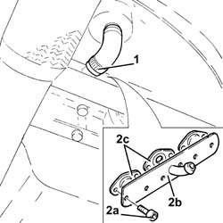

1080D35 Engine oil collection MANIFOLD - R.R.
- Path
- Procedures > 10 ENGINE UNIT > 1080 EXHAUST EMISSION CONTROL SYSTEM > 1080D crankcase vapour/gas recirculation system > 1080D35 Engine oil collection MANIFOLD - R.R.
- Kind
- repair procedure (removal / refitting; the operation number is the code)
- Applies to
- engines: 1.3 JTD 16v; all production periods
- Interactive page
- https://sloeber94.github.io/elrnDB-fPnd/en/#/2752628
Applies to: engines: 1.3 JTD 16v; all production periods
 Removing
Removing
 Refitting
RefittingRemove the car from the ramps.
Disconnect the battery terminal.
5530A14 alternator - r+r for versions with air conditioner
5530A40 alternator brackets/mount/spacer - r r
Disconnect the electrical connections from the starter motor and move them aside.
 | Name | Connector |
|---|---|---|
- | Starter' motor | A20 |
1. Loosen the band and disconnect the engine oil recovery pipe, engine oil recovery manifold side.
2. Undo the bolts (2a) and remove the engine oil recovery manifold (2b) complete with gaskets (2c).

Applies to: engines: 1.3 JTD 16v; all production periods
Refitting
RemovingFit the engine oil recovery manifold complete with gaskets in place and secure it using the bolts.
Connect the engine oil recovery pipe, engine oil recovery manifold side, and tighten the band.
Connect the electrical connections to the starter motor.
| Name | Connector |
|---|---|---|
- | Starter' motor | A20 |
5530A40 alternator brackets/mount/spacer - r r
5530A14 alternator - r+r for versions with air conditioner
Connect the battery negative terminal.
Remove the vehicle from the ramp.